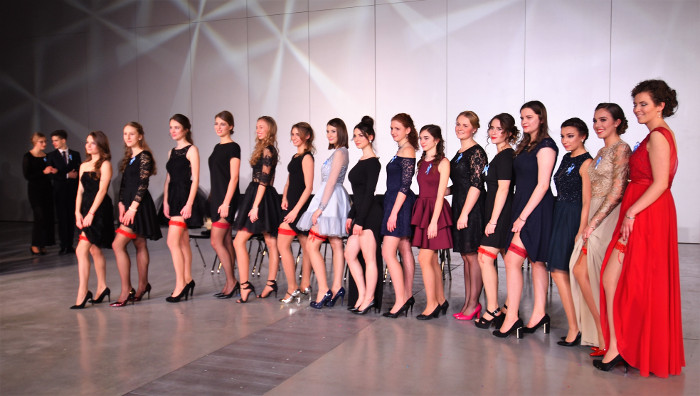

Największa studniówka na Opolszczyźnie
 500 osób, tegoroczni maturzyści z opolskiej Dwójki i ich goście bawili się na balu sto dni przed maturą w największej sali, która może pomieścić tak liczne grono, w Centrum Wystawienniczo-Kongresowym w Opolu. Sygnałem do rozpoczęcia zabawy był polonez pokazowy w wykonaniu dwóch par z każdej klasy, dyrekcji i wychowawców. Potem do tańca dołączyli pozostali maturzyści. - Tak rozpoczyna się tylko studniówka, to ją odróźnia od innych zabaw i dyskotek, poczuliśmy atmosferę tego jedynego balu - mówi Monika, uczennica klasy IIIB. - Niesamowite przeżycie tańczyć poloneza z moich chłopakiem, z całą klasą i nauczycielami. Naprawdę poczułam, że tworzymy wspólnotę. Ten jedyny raz w szkole wszyscy wznieśli toast szampanem. I wszyscy bawili się szampańsko do godziny 4 nad ranem, gdy gaszono światła... - Byłam na studniówce innej szkole, ale nasza była niesamowita – twierdzi Wirginia z klasy IIIG. - Bawiłam się do końca. Mieliśmy – można powiedzieć - podwójną zabawę, ponieważ oprócz zespołu był DJ Dee Push. Muzyka klubowa, nowoczesna była pomieszana z disco-polo i pop, więc każdy mógł znaleźć coś dla siebie. Uczniowie nie opuszczali parkietu nawet podczas przerwy na posiłki. - Jestem zaskoczony, że tak duża szkoła zorganiozowała bal na takim poziomie. Poznałem wiele osób, z którymi bawiłem się całą noc. Można u was naprawdę łatwo nawiązwać relacje - dodaje Tomek, chłopak Wirginii. Atmosferę studniówkową rozgrzał pokaz taneczny grupy chłopców z różnych klas. Panowie odpowiednio ubrani tańczyli przy krzesłach, popisując się umiejętnościami gimnastycznymi: nie brakowało licznych przewrotów i stania na rękach. Dziewczyny nagrodziły kolegów burzą oklasków. - Będziemy długo pamiętać naszą wspaniałą, szkoda, że już ostatnią, zabawę. Uwierzyć nie możemy, że właśnie mijają szkolne lata - wyznaje Sebastian z klasy IIID.

{kind=link}
ul. Pułaskiego 3
45-048 Opole
tel. 077 45 422 86
fax 077 02 18 87
e-mail:
bez.tytulu@o2.pl
Ola Orłowska
DTP
Michał Woś
Opiekun
mgr Lucyna Rudnik
Ola Orłowska, Ania Cichy, Dagmara Cioska, Julia Nowicka, Julia Marcinów, Hania Szarzewicz, Michał Woś, Bartek Lipnicki, Jonasz Mularz, Paweł Kubacki, Mateusz Pietruszyński, Mateusz Orlik